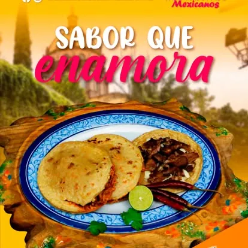

La carta
Gorditas, sopes y lo que se antoje
Antojitos mexicanos hechos al momento. Los precios de esta página son de referencia — la carta completa y actualizada está siempre disponible en el local.

Sabor que enamora
Así se sirven: recién salidas del comal, en plato de talavera, listas para compartir.
¿Vienen en grupo?
Cotizar mi evento
Cotiza tu charola o evento sin compromiso
Para grupos de más de 8 personas o eventos privados, arma tu pedido con anticipación y te esperamos con todo listo.